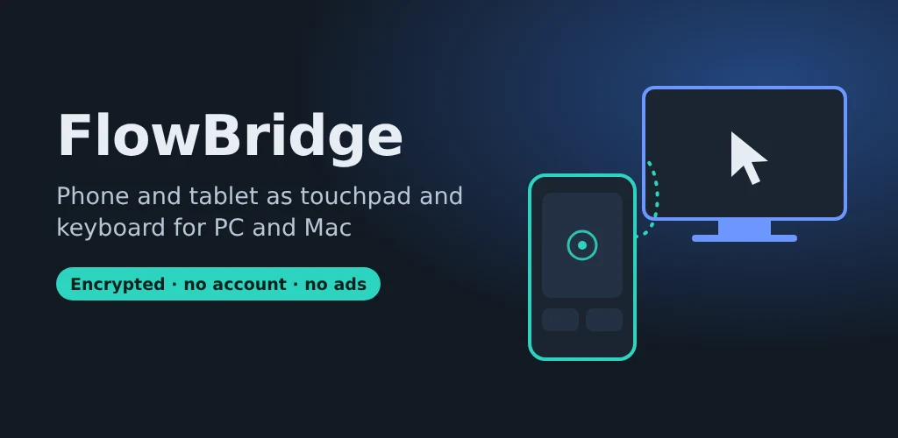
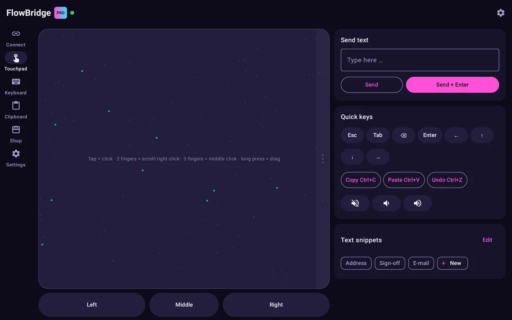

Phone and tablet
Touchpad, keyboard, clipboard and text snippets. In landscape, touchpad and keys sit side by side as a control deck. Android 8 and later.
FlowBridge turns your phone and tablet into a touchpad and keyboard for your Windows PC and your Mac. At the desk you share mouse, keyboard and clipboard between PC and Mac. Everything runs encrypted on your own network, with no account and no forced subscription.
As of November 2026: the Android app is in internal testing on Google Play. The desktop app is built; testing on real hardware is still in progress.

Touchpad, keyboard, clipboard and text snippets. In landscape, touchpad and keys sit side by side as a control deck. Android 8 and later.
Accepts phone, tablet and Mac. Mouse and keyboard move across the screen edge to the Mac. Built, real-world test pending.
For Apple Silicon and Intel. Currently has to be built from source; a ready-made package will follow.
Everything listed is built and covered by automated tests. Testing on real devices is in progress.
Move, tap, two-finger right click, scroll, drag. With scroll strip and left-handed mode.
Text with accents and emojis, live typing, special keys, F1–F12, number pad, shortcuts with Ctrl or ⌘.
Text between phone, PC and Mac, with history. Plus snippets for frequent texts.
The pointer glides across the screen edge from PC to Mac. The keyboard follows.
End-to-end encryption, pairing with a 6-digit code, automatic discovery on Wi-Fi. No cloud.
File and image transfer, more than two computers, control over the internet.
The default is the eye-friendly pair “Soft Light” and “Soft Dark”. The pictures are real views of the Android app with sample data.

In internal testing on Google Play. The public store link follows after release.
Google Play: comingVersion 0.3 is built. Microsoft Store release after the real-world test.
Download: comingCurrently build-from-source only.
Download: comingTouchpad, keyboard, clipboard, encryption and security updates cost nothing. Pro is planned as a one-time purchase without subscription: on Android through Google Play (premium designs, touchpad designs, custom accent colour, unlimited snippets, presentation bar), on the desktop with screen editor, custom hotkeys and premium designs. Prices are not final. Nothing can be purchased yet.
Not publicly. The Android app is in internal testing and the desktop app is still being checked on real hardware.
No. The core features are free and Pro is planned as a one-time purchase.
Input and clipboard text travel encrypted, directly between your paired devices on the local network. There is no server in between, no account, no ads and no tracking.
No. A phone or tablet can also control just the Windows PC.